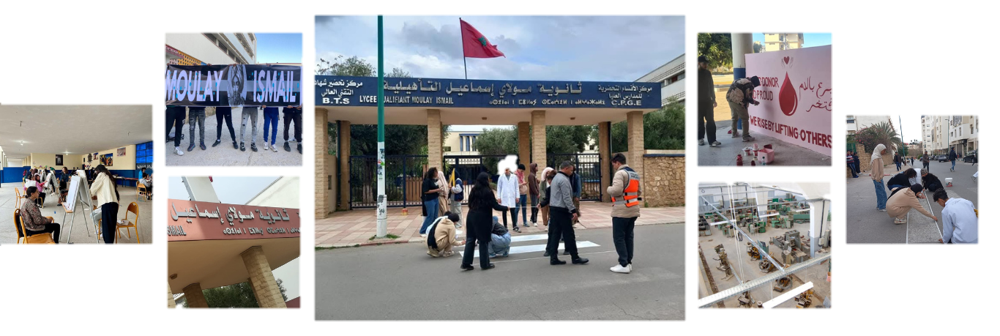

Bienvenue sur le BTS du Lycée Moulay Ismail
Brevet de Technecien specialise
Le BTS est une formation Bac+2, alliant théorie et pratique pour une insertion rapide sur le marché du travail ou une poursuite d’études. Au Lycée Moulay Ismail, nous offrons un enseignement de qualité avec des stages en entreprise et des outils modernes
